- Ces diapositives sont disponibles en version web et en PDF.
- L'ensemble du matériel de cours est disponible sur la page du portail moodle.
Séance 1: Introduction
BIO 500 - Méthodes en écologie computationnelle
Dominique Gravel
Laboratoire d'écologie intégrative
Séance 1
Introduction
Le Bacon number

Le Bacon number
Une hypothèse selon laquelle n'importe quel acteur peut être relié à Kevin Bacon via ses rôles dans 6 films ou moins.
Exemple
- Kevin Bacon a lui-même un Bacon number de 0
- Sean Penn a un Bacon number de 1 pour son rôle dans Mystic River
- Madonna a un Bacon number de 2 pour son rôle dans Shadows and Fog, dans lequel figurait Camille Saviola, qui a elle-même joué avec Kevin Bacon dans Queens Logic
Si le jeu vous amuse, allez consulter le site The Oracle of Bacon
Six degrés de séparation
Le jeu est une parodie du mythe urbain de six degrés de séparation, qui propose que tous les humains sur la terre soient à moins de six degrés de séparation dans une chaine "d'ami à ami".
Kochen a proposé dans les années 50 que "it is practically certain that any two individuals can contact one another by means of at most two intermediaries. In a [socially] structured population it is less likely but still seems probable. And perhaps for the whole world's population, probably only one more bridging individual should be needed."
L'expérience de Milgram
- Inspiré des travaux de Gurevich
- Étude des réseaux sociaux
- Souhait d'évaluer la probabilité que deux personnes sélectionnées au hasard se connaissent
L'expérience de Milgram
- Individus choisis au hasard au Nebraska et au Kansas, et qui devaient rejoindre des personnes à Boston.
- Un paquet était envoyé, incluant des instructions, une lettre ainsi que de l'information sur la personne ciblée à Boston
- Si la personne de départ connaissait directement la cible, elle devait lui envoyer directement la lettre
- Sinon, la personne devait choisir un ami ou une connaissance qui était susceptible de connaître la personne cible
- Une fois rendu à destination, le destinataire envoyait la chaîne de communication au chercheur
Résultats
- 64 lettres sur 296 envoyées sont arrivées à destination
- Le nombre de degrés moyens était entre 5 et 6
Suivi
- L'expérience a été répliquée de nombreuses fois, notamment par Dodds et al. qui ont aussi confirmé un nombre de 6
- Watts et Strogatz (1998) ont élaboré un modèle qui permet d'expliquer les propriétés de petit monde trouvées dans de nombreux réseaux
Le modèle de petits mondes
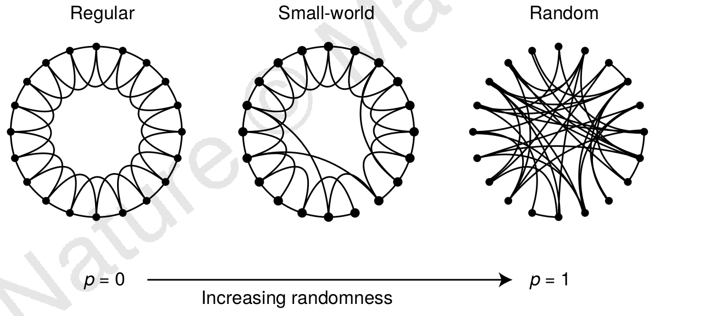
Les propriétés de petit monde en écologie
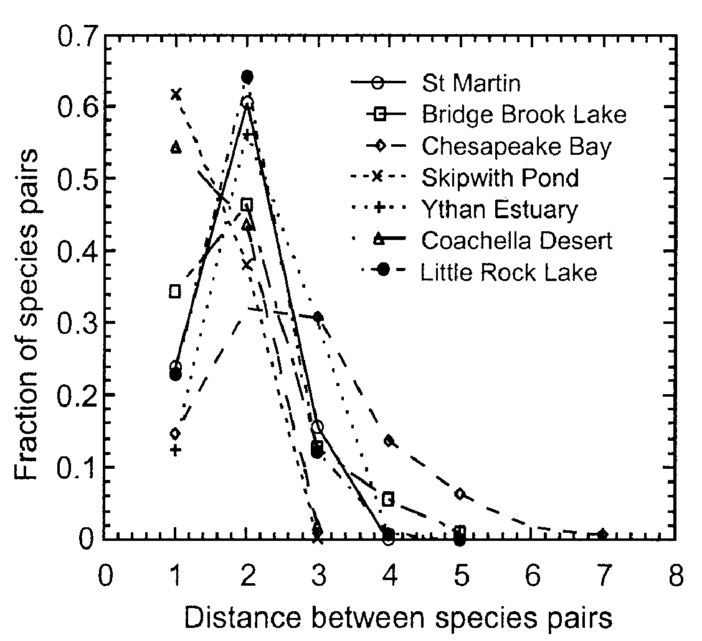
Les propriétés de petit monde en écologie

Les propriétés de petit monde en écologie

Les propriétés de petit monde en écologie

Les propriétés de petit monde en écologie

Le projet de session
Est-ce que le réseau de collaborations entre les étudiants du bacc en écologie a les mêmes propriétés que les réseaux écologiques ?
La science reproductible
L'importance de la reproductibilité.
Ces situations peuvent survenir lors de votre carrière professionnelle:
Situation 1. Un employeur souhaite que vous réalisiez les mêmes analyses 3 ans plus tard sur des données différentes.
Situation 2. Vous avez commis une erreur dans votre saisie de données, vous devez reconduire vos analyses.
Situation 3. Un des réviseurs de votre article scientifique vous demande de refaire vos analyses en tenant compte d'une nouvelle variable environnementale.
Les étapes du travail d'un biologiste

Les étapes du travail d'un biologiste

Certaines étapes intermédiaires sont souvent oubliées.
Discussion
Identification des étapes d'une étude scientifique susceptibles d'influer sur la reproductibilité.
Présentation du cours BIO500
Objectif général
Au terme de ce cours, l'étudiant sera en mesure de réaliser l'ensemble de la séquence d'une étude d'écologie en respectant les standards de gestion, d'analyse et de présentation des données. Le cours portera sur la réalisation d'un projet intégrateur, de la collecte des données à la production du rapport final.
Objectifs spécifiques
- Planifier une base de données et la préparation de formulaires pour leur acquisition ;
- Programmer et interroger une base de données relationnelle ;
- Compiler et exécuter un script au moyen de makefile ;
- Représenter visuellement les données au moyen de R ;
- Préparer un rapport d'étude au moyen de LaTeX ;
- Utiliser un système de contrôle de version pour le suivi des modifications sur du code ;
- Porter un regard critique sur la reproductibilité et la transparence d'études scientifiques ;
Contenu du cours
Bloc 1: Planification de la collecte et organisation des données
- Types de données
- Formulaires de saisie
- Bases de données relationnelles (SQL)
- Requêtes
Contenu du cours
Bloc 2: Outils pour une science reproductible et transparente
- UNIX
- le makefile
- Système de contrôle de version git
Contenu du cours
Bloc 3: Visualisation des données
- Les types de graphiques
- Fonctions graphiques de base sur R
- Paramètres graphiques
- Packages R spécialisés
Contenu du cours
Bloc 4: Communication scientifique au moyen de LaTeX
- Rédaction de rapports et d'articles scientifiques
- Mise en page
- Insertion de figures et tableaux
- Gestion des références
- Utilisation de Beamer pour les présentations
Approche
Les cours vont comprendre une période de présentation entrecoupée d'exercices, suivie d'une discussion générale sur des références clés.
Nous progresserons dans l'exécution du travail de session. Le travail sera divisé en étapes et l'évaluation portera sur son intégration.
Évaluation
L'évaluation porte sur la réalisation d'un travail de session (75%), réalisé en équipe de 4 personnes. Le travail sera divisé en 3 étapes réparties au cours de la session. L'évaluation finale (25%) portera sur la rédaction d'un essai de 1500 mots sur les enjeux de reproductibilité en science expérimentale.
Survol de Linux / Ubuntu
Un nouveau monde s'ouvre à vous...
Il existe une grande diversité de distributions Linux (Systèmes d'exploitation). L'ensemble de ces distributions sont gratuites et libres (OpenSource) !
Alors, pourquoi Ubuntu?
- Une importante communauté d'utilisateurs (estimé à 25 millions)
- Aussi facile d'utilisation que Microsoft Windows

Sur la machine virtuelle Ubuntu...
Les logiciels/langages que nous utiliserons dans le cours ont déjà été installés pour vous.
- R (avec les librairies nécessaires)
- La distribution complète de LaTeX
- Git
- SQL
- SublimeText
- Le terminal (crt+alt+t)
L'environnement UNITY
- Le lanceur
- Naviguer dans les fichers :
<ctrl> <n> - Chercher un programme
- Changer les paramètres
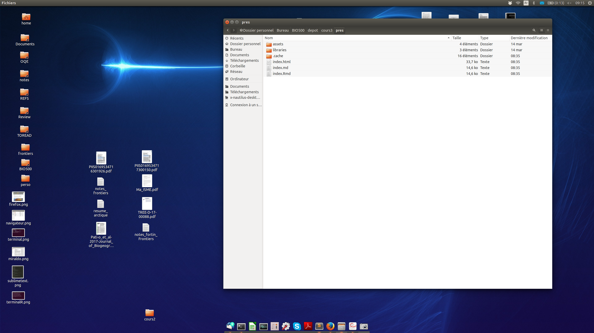
L'environnement UNITY
Le terminal
- Lancer le terminal
<ctrl> <alt> <t> - Changer de répertoire avec
cd - Liste des fichiers dans le dossier actuel avec
ls - Installer des programmes
sudo apt install unity-tweak-tool

L'environnement UNITY
Lire un PDF
- Le programme par défaut est
Visionneur - D'autres programmes sont disponibles, notamment pour éditer des PDFs. J'utilise
xournal.

L'environnement UNITY
Naviguer sur le web
FireFoxest le navigateur par défaut, vous pouvez aussi utiliserChrome

Démarrer des programmes
SublimeText2
- Ouvrir un script
- Nouveau script
- Changer le surligneur de syntaxe

Démarrer des programmes
Lancer R à partir de SublimeText
- Il faut lancer 'SublimeREPL' au moyen des touches
<ctrl> <shift> <p>et sélection R - Une fois la nouvelle fenêtre ouverte, les commandes peuvent être soumises avec
<ctrl> <enter>
ASTUCE: les fenêtres sur Linux peuvent être alignées sur la gauche, la droite ou le centre automatiquement au moyen de la commande <ctr> <alt> <flèche>
Démarrer des programmes
R directement dans le terminal
Il faut ouvrir un terminal avec <ctrl> <alt> <t> et ensuite taper R
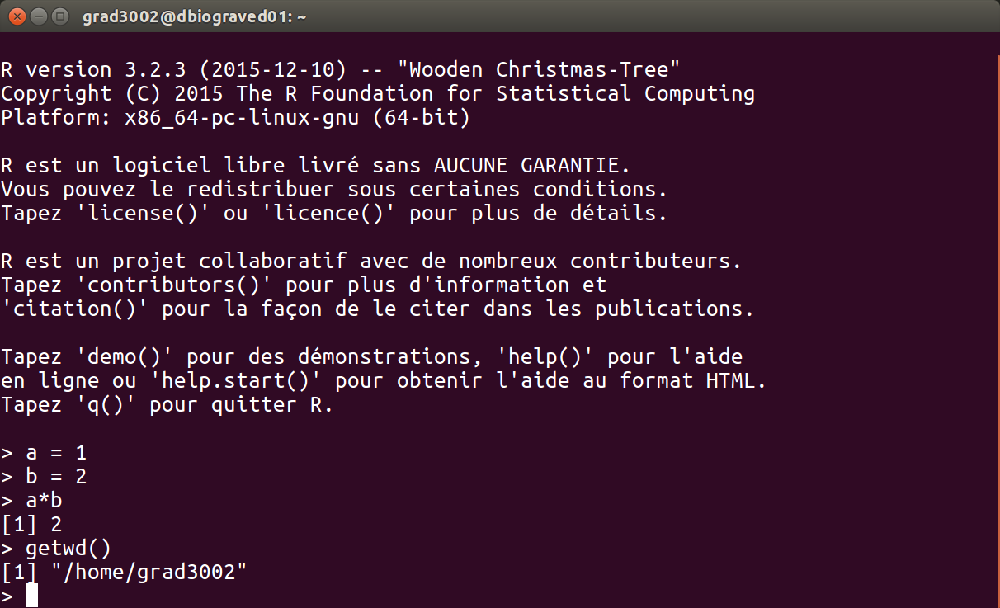
Projet de session
Rappel du problème
Est-ce que le réseau de collaboration entre les étudiants est différent des réseaux écologiques ?
Rappel du problème
Est-ce que l'on parvient à expliquer une collaboration à partir de caractéristiques des noeuds ?
Pour commencer
En équipe de 4, on vous demande de commencer à planifier une campagne de collecte de données. Commencez par discuter des types de données que vous souhaitez récolter, faites la liste des informations nécessaires pour répondre à la question. Ensuite, établissez un protocole afin de récolter ces données.
Deuxième étape
Préparez un formulaire de saisie de données avec Excel et commencez à le remplir avec les données entre les membres de votre équipe.
Troisième étape
Retour en classe : partage de l'information et harmonisation des formulaires.
Lectures et travail pour la semaine prochaine
Lectures et travail
Travail
Prenez le temps de vous familiariser avec la Machine virtuelle Ubuntu.
- Exemples: Créer des fichiers et des dossiers, changer le fond d'écran, etc.
Commencez à récolter les données pour le travail de session.
Lectures
- Baker, M. 2016. Is there a reproducibility crisis ? Nature, 533 : 452:454
- Munafo, M.R. et al. 2017. A manifesto for reproducible science. Nature Human Behaviour 1: 0021
- Open Science Collaboration. 2015. Estimating the reproducibility of psychological science. Science 349 : 943.
Diapos hors cours
L'utilisation d'une machine virtuelle (VM)
Définition
VirtualBox est une application qui émule une machine/ordinateur virtuelle à l'intérieur de votre ordinateur.
Une machine virtuelle est donc un environnement confiné sur lequel on peut installer un autre système d'exploitation qui utilise les ressources matérielles de l'hôte (votre ordinateur).
Nous utiliserons VirtualBox pour exécuter une machine Linux (distribution Ubuntu 16.04), sur votre PC Windows ou votre Mac créé spécifiquement pour ce cours.
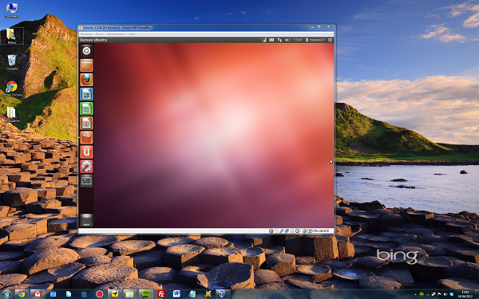
Pourquoi une VM?
- Simplifier l'installation des outils nécessaires pour le cours
- Être certain que tout le monde dispose des mêmes outils
- Permet d'uniformiser l'enseignement
- Un système d'exploitation de type
UNIXest nécessaire pour exécuter certaines tâches de ce cours
Procédure d'importation et de lancement de la VM
- Étape 1: Installer VirtualBox
- Étape 2: Téléchargez l'image de la machine virtuelle créée pour le cours
Procédure d'importation de la VM
- Étape 3: Ouvrir VirtualBox
- Étape 4: Dans le menu Machine, sélectionnez Ajouter
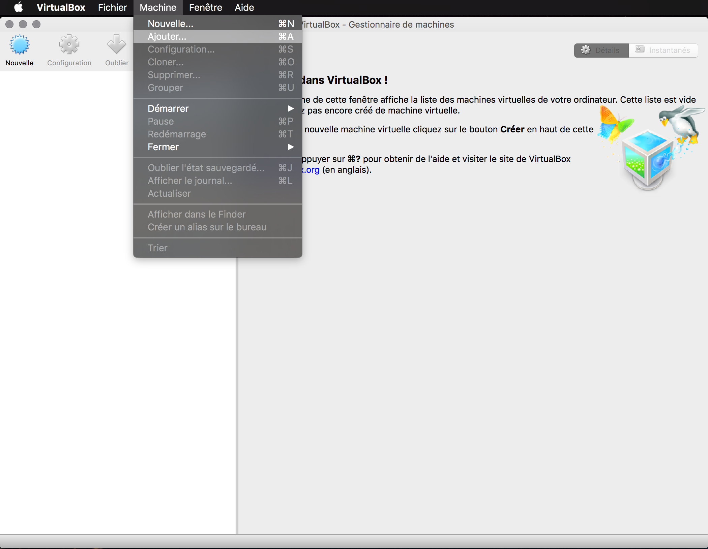
Procédure d'importation de la VM
- Étape 5: Sélectionner le fichier de l'image de la machine virtuelle créé pour le cours (téléchargé à l'étape 2)
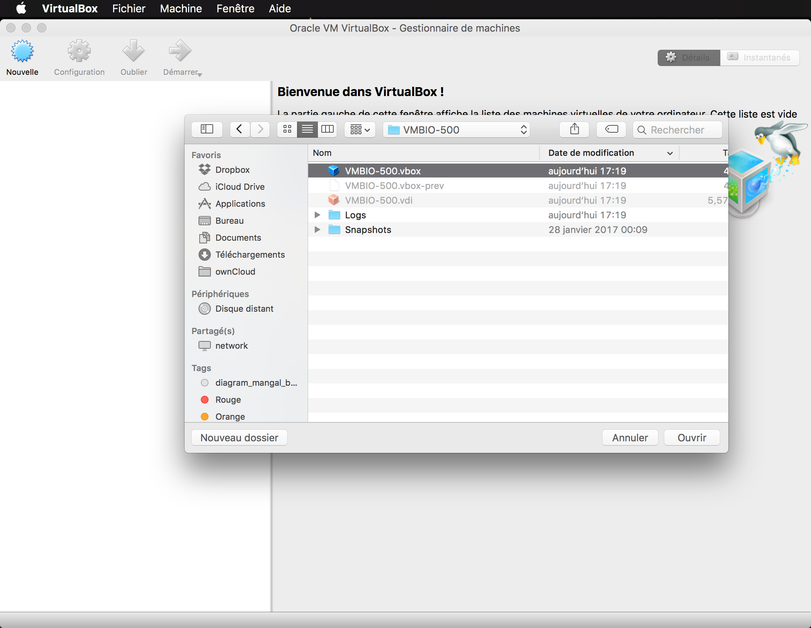
Procédure de lancement de la VM
- Étape 6: Clique droit sur la machine virtuelle
VM-BIO500, puisDémarreret enfin surDémarrage normal. - Étape 7: Et voilà ! La machine virtuelle est en train de démarrer.
Veuillez prendre note que le mot de passe utilisateur est: etudiant
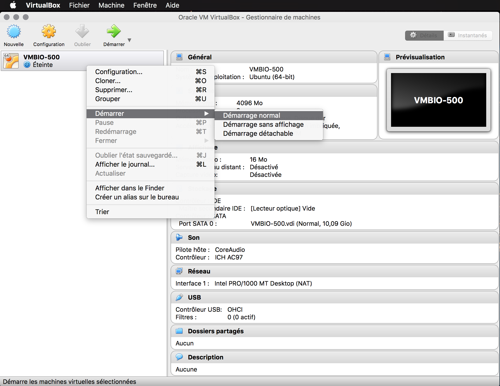
Présentation sur les réseaux écologiques
Définition

Types de réseaux
Internet
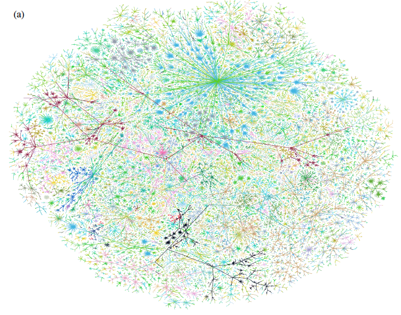
Types de réseaux
Sociaux
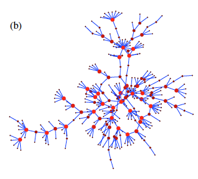
Types de réseaux
Trophiques
Types de réseaux
Plante-pollinisateur
Types de réseaux
Plante-vecteur de dispersion
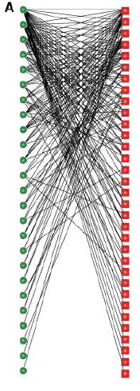
Types de réseaux
Plante-herbivore
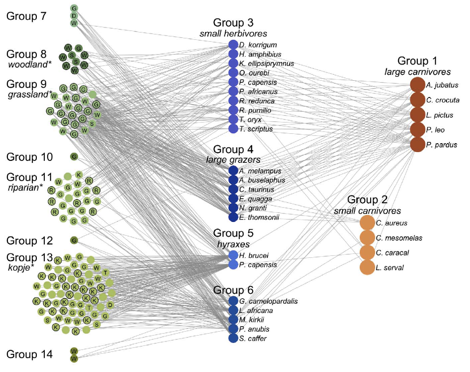
Types de réseaux
Plante-fongi

Types de réseaux
Hôte-parasite
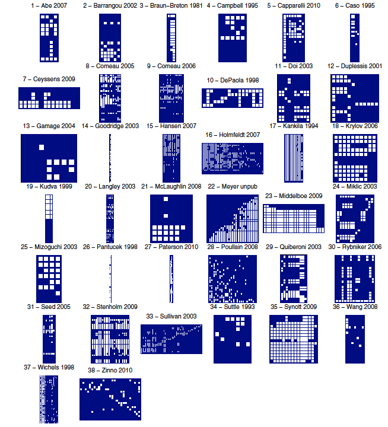
Glossaire
S, L, C
Glossaire
Rang trophique

Glossaire
Distribution de degrés
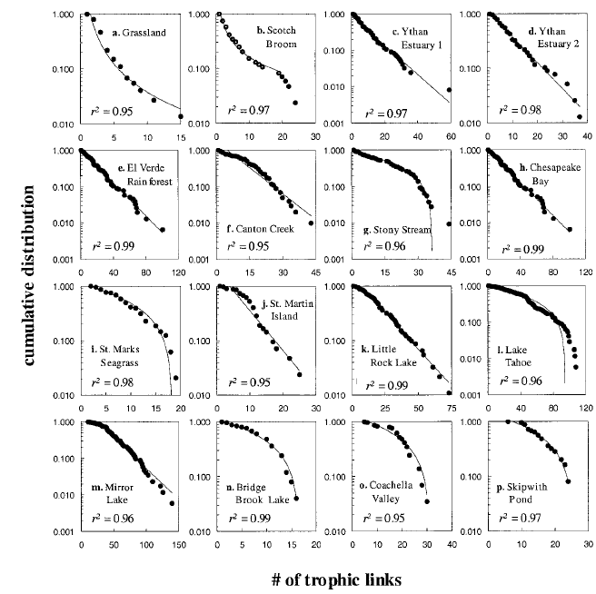
Glossaire
Centralité
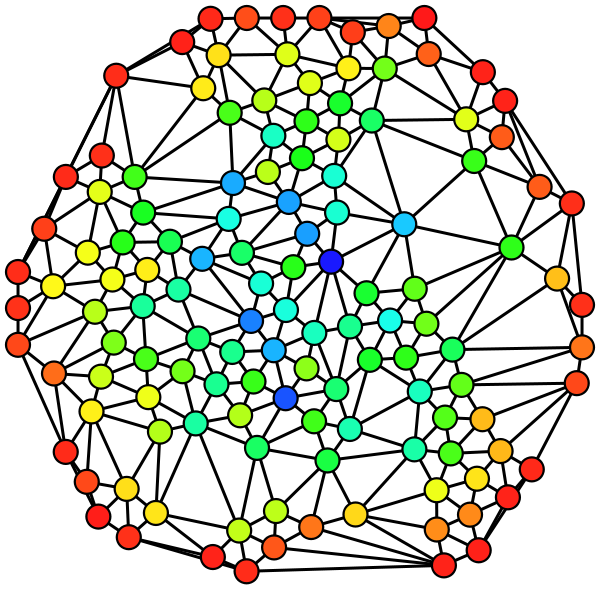
Glossaire
Nestedness

Glossaire
Modularité

Glossaire
Motifs
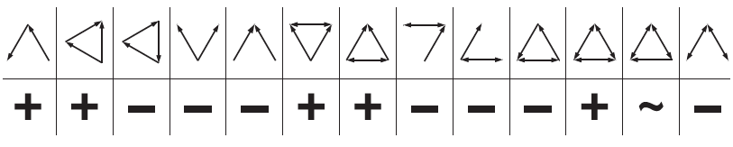
Glossaire
Robustesse
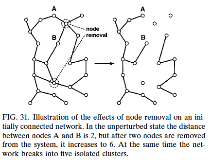
Présentation sur les réseaux écologiques
Définition
Types de réseaux
Internet
Types de réseaux
Sociaux
Types de réseaux
Trophiques
Types de réseaux
Plante-pollinisateur
Types de réseaux
Plante-vecteur de dispersion
Types de réseaux
Plante-herbivore
Types de réseaux
Plante-fongi
Types de réseaux
Hôte-parasite
Glossaire
S, L, C
Glossaire
Rang trophique
Glossaire
Distribution de degrés
Glossaire
Centralité
Glossaire
Nestedness
Glossaire
Modularité